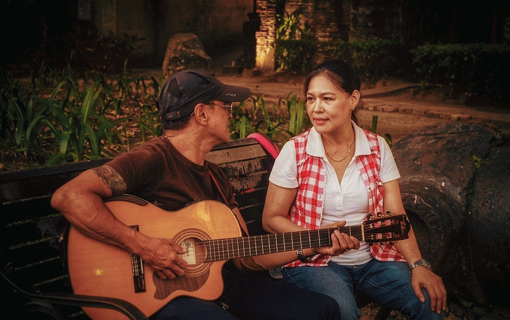
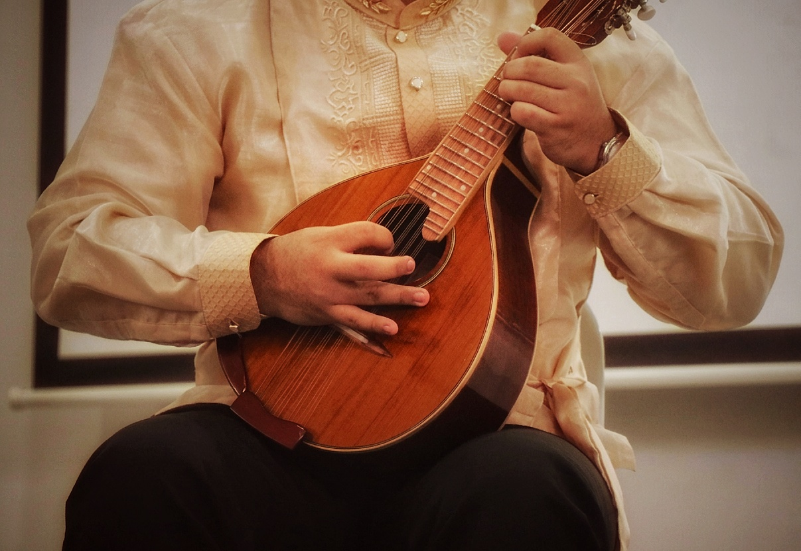
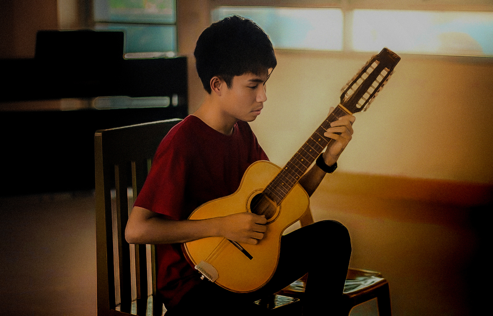
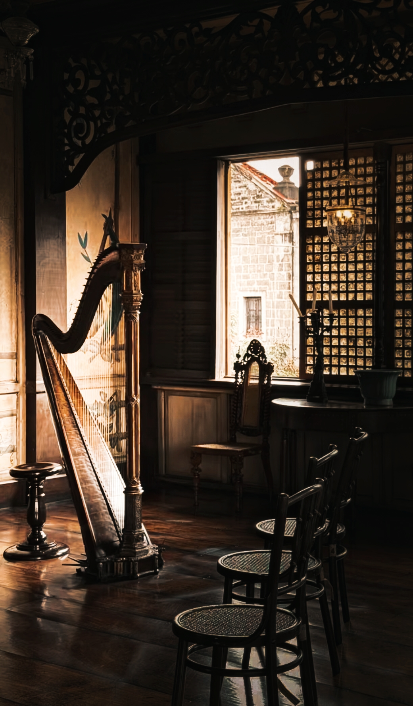
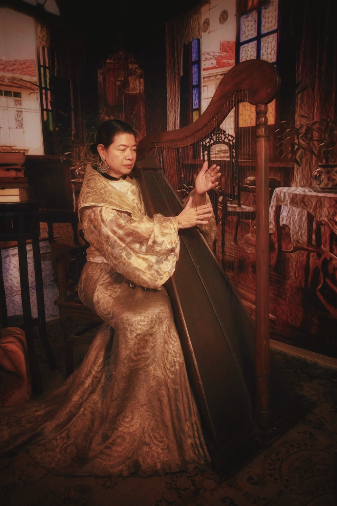
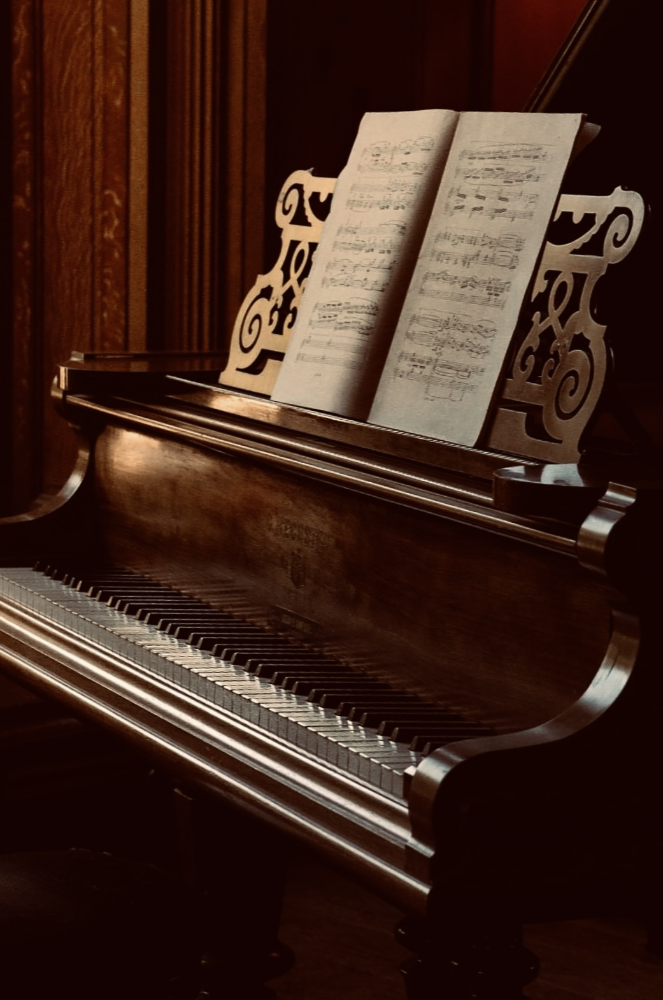

SAmple titl sadasd
dasdasda
The Spanish Colonial Period greatly influenced Filipino music by introducing new instruments, melodies, and religious songs. Traditions such as the harana, rondalla, and church hymns reflect the blending of Spanish styles with Filipino creativity. These musical influences became part of the country’s cultural identity and continue to be heard in modern Filipino music today.






dasdasda